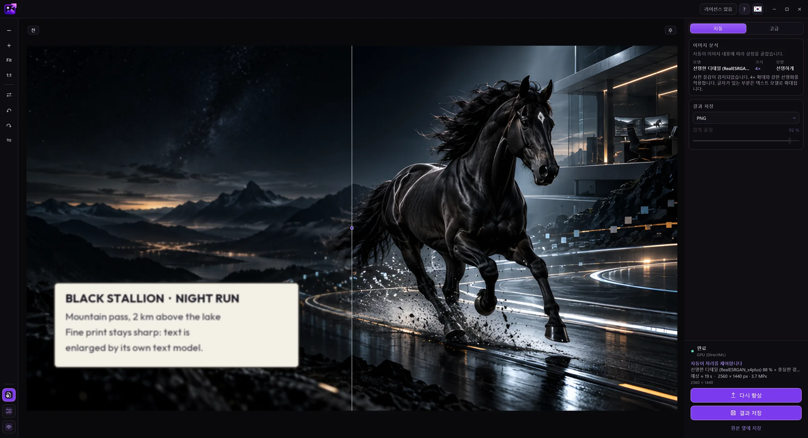
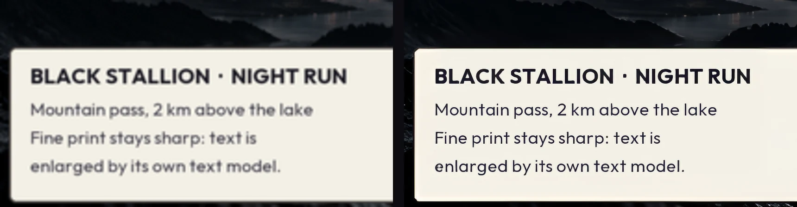
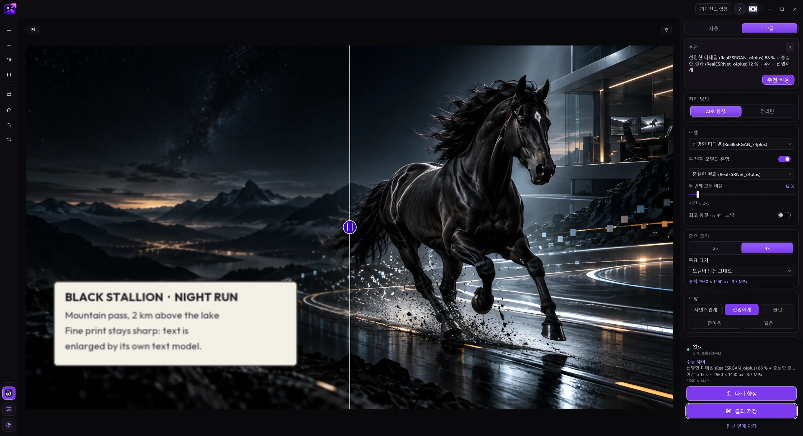
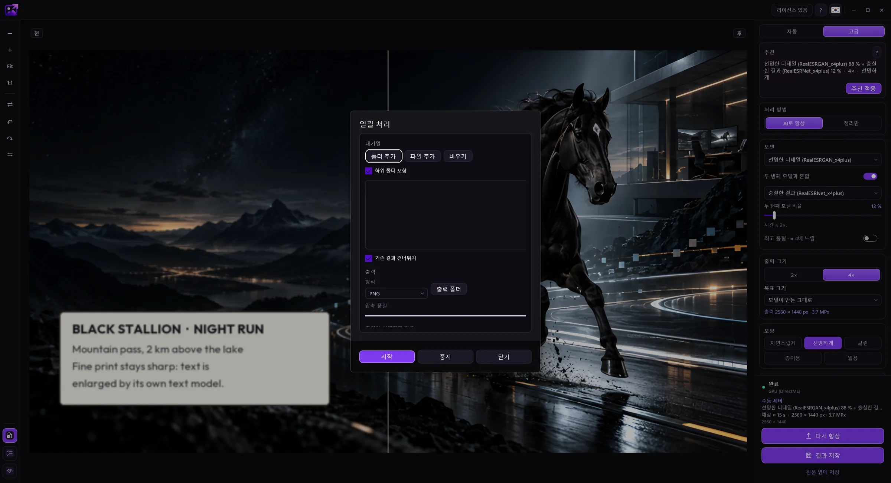
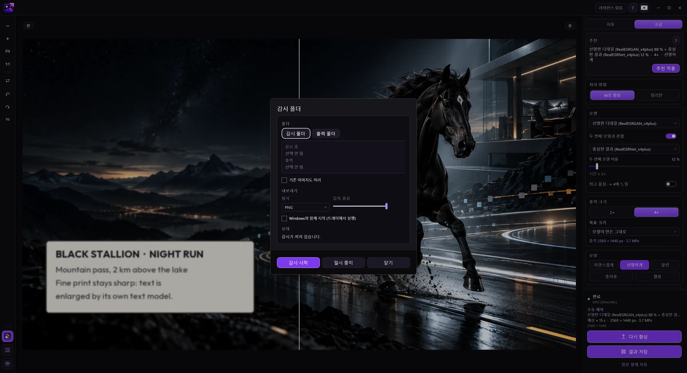

자동 모드
앱이 이미지(사진, 그림, 텍스트, 손상된 사진)를 인식해 모델과 크기를 고릅니다. 노이즈가 많은 사진은 먼저 정리한 뒤 고운 입자를 다시 더해, 결과가 그린 것처럼 보이지 않습니다.
EasyUpscale AI은 내 컴퓨터에서 바로 AI로 이미지를 확대하고 개선합니다. 클라우드도, 구독도, 대기열도 없습니다.
체험판은 무료로 다운로드해 사용해 볼 수 있습니다. 마음에 들면 라이선스를 구매하세요.


원본 사진(384 × 256 px)에서 이 디테일은 75 × 50 픽셀에 불과합니다. 왼쪽: 실제 픽셀, 가운데: 일반 확대, 오른쪽: EasyUpscale AI(4×).


자동 모드에서는 앱이 이미지를 인식해 모델, 배율, 모양을 스스로 고릅니다.
사진이나 폴더 전체를 창에 놓으세요. 또는 탐색기에서 마우스 오른쪽 버튼을 눌러 확대 명령을 선택하세요.
앱이 이미지에 무엇이 담겼는지 파악해 알맞은 모델을 고릅니다. 진행 상황을 볼 수 있고 언제든 취소할 수 있습니다.
슬라이드하여 원본과 결과를 비교하고 PNG, JPEG, WebP, AVIF, TIFF 또는 BMP로 저장하세요.

선을 움직여 비교하세요. 원본 사진은 384 × 256 px에 불과합니다. 왼쪽: 일반 확대, 오른쪽: 앱의 실제 결과(‘선명한 디테일’ 모델).


앱이 이미지(사진, 그림, 텍스트, 손상된 사진)를 인식해 모델과 크기를 고릅니다. 노이즈가 많은 사진은 먼저 정리한 뒤 고운 입자를 다시 더해, 결과가 그린 것처럼 보이지 않습니다.
모델을 직접 고르고, 두 모델을 원하는 비율로 혼합하고, 2×와 4×부터 4K, Full HD 같은 프리셋까지 크기를 설정하세요.
폴더 전체를 한 번에 확대하세요. 또는 새 이미지가 백그라운드에서 자동으로 확대되는 폴더를 앱에 지정하세요.
선명도, 노이즈 완화, 원본과의 근접도, 윤곽선 헤일로를 위한 스타일과 슬라이더.
PNG, JPEG, WebP, AVIF, TIFF, BMP로 저장합니다. 투명도와 메타데이터는 유지됩니다.
탐색기 오른쪽 클릭 메뉴 명령, Windows와 함께 시작해 트레이에서 폴더 감시, 15개 언어.
한 가지를 제대로 하는 도구: 내 PC에서, 계정 없이, 하나의 가격으로.
일회성 라이선스입니다. 구독도, 이미지당 크레딧도, 대기열도 없습니다. 1년 후에도 앱은 당신 것입니다.
모든 처리가 그래픽카드에서 이뤄지고 아무것도 업로드되지 않습니다. 고객이나 회사 이미지도 걱정 없습니다.
사진, 그림, 오래되어 손상된 사진, 그리고 글자와 라벨에는 각각 전용 모델이 있습니다. Auto가 알맞은 모델을 고르고, 사진 속 글자가 있는 부분에는 텍스트 모델을 사용합니다.
일괄 처리, 감시 폴더, 탐색기 명령: 다른 일을 하는 동안 이미지가 확대됩니다.
DirectX 12를 통해 NVIDIA, AMD, Intel 지원. 비싼 카드나 특정 제조사가 필요 없습니다.
모든 기능을 무료로 써 볼 수 있으며 워터마크만 표시됩니다. 구매 후 14일 이내에는 이유 없이 환불받을 수 있습니다.
이미지는 전부 그래픽 카드에서 처리됩니다. 업로드는 없고, 이미지당 크레딧도, 대기열도 없습니다.
앱이 보내는 것은 라이선스를 확인할 때의 라이선스 키와 컴퓨터 이름뿐입니다. 라이선스 키가 없으면 인터넷에 연결하지 않습니다. 자세한 내용은 개인정보 처리방침을 참조하세요.
실제 EasyUpscale AI 창입니다.




모든 기능은 라이선스 없이도 작동합니다. 유일한 차이는 결과 위의 워터마크로, 미리 보기에서는 옅고 저장된 파일에서는 더 진합니다.
아니요. 모든 것이 내 컴퓨터에서 계산됩니다. 자세한 내용은 개인정보 보호 섹션을 참조하세요.
키는 인터넷을 통해 한 번 활성화합니다. 이후 앱이 가끔 조용히 라이선스를 다시 확인하며, 마지막 확인 후 최대 30일까지 연결 없이 작동합니다. 라이선스 하나는 컴퓨터 한 대에 적용됩니다. 컴퓨터를 바꿀 때는 앱에서 활성화를 해제하고 새 컴퓨터에서 키를 사용하세요.
구매 후 14일 이내에는 이유 없이 철회하고 전액을 돌려받을 수 있습니다. 그 이후에도 앱이 내 컴퓨터에서 작동하지 않고 저희가 해결할 수 없으면 환불해 드립니다. 먼저 무료로 사용해 볼 수도 있습니다. 자세한 내용은 환불 정책을 참조하세요.
간단한 데스크톱 도구. 내 그래픽 카드, 내 파일, 내 결과.